This homework has two completed parts in this report. Part 1 fits a 2D neural field to an image using positional encoding and a small MLP. Part 2 fits a NeRF to the provided Lego multi-view dataset using sampled rays, sampled 3D points, a NeRF MLP, and volume rendering.
I implemented a positional-encoding-based MLP in hw4/code/models.py and the full training pipeline in
hw4/code/train_part1.py. The dataloader randomly samples normalized pixel coordinates and RGB targets,
the model predicts colors in [0, 1], and optimization uses Adam with MSE loss while PSNR is tracked over training.
(u, v)L = 104 linear layers with hidden width 256, ReLU activations, and final Sigmoid1e-2100002000{2, 10} and widths {64, 256}The reference image run used the default Part 1 setup and reached a final reconstruction quality of 29.247 dB PSNR.
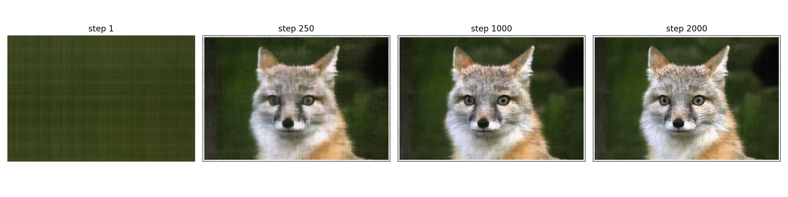
1, 250, 500, 750, 1000, 1250, 1500, 1750, 2000.
The neural field first captures low frequencies and then sharpens edges and texture.
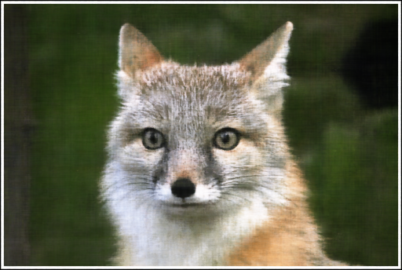
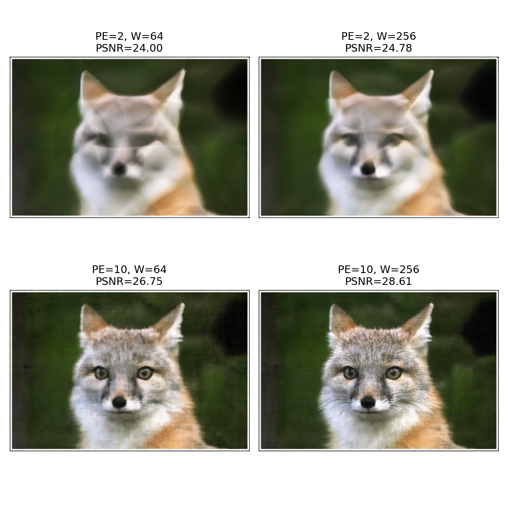
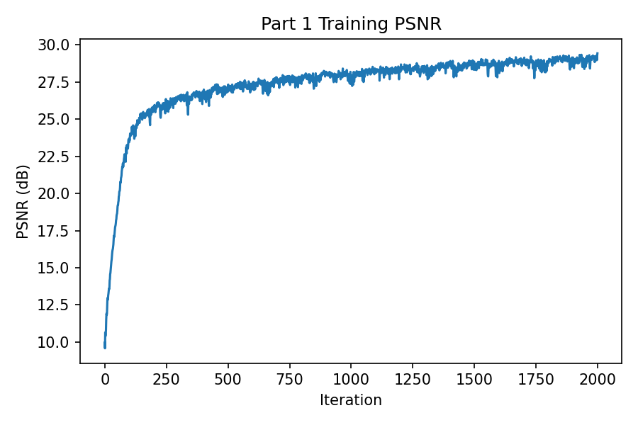
L=10, width 256, 4 layers,
learning rate 1e-2, batch size 10000, and
2000 training iterations. The metric rises quickly early and then improves more gradually as details are refined.
My own image is IMG_6873.jpg. Since the original resolution is very large, I resized it to a maximum image dimension of
512 inside the training script for a manageable MPS training budget. This run reached 31.337 dB PSNR.
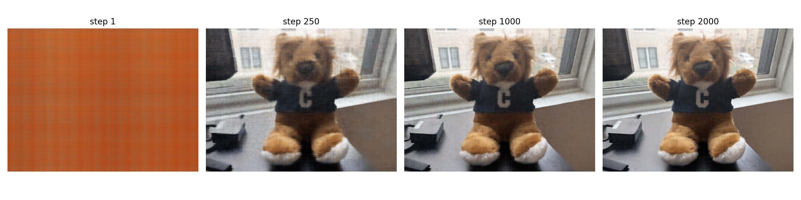
1, 250, 500, 750, 1000, 1250, 1500, 1750, 2000.
Structure is recovered early, followed by finer boundaries and color transitions.
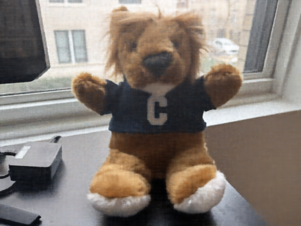
IMG_6873.jpg.
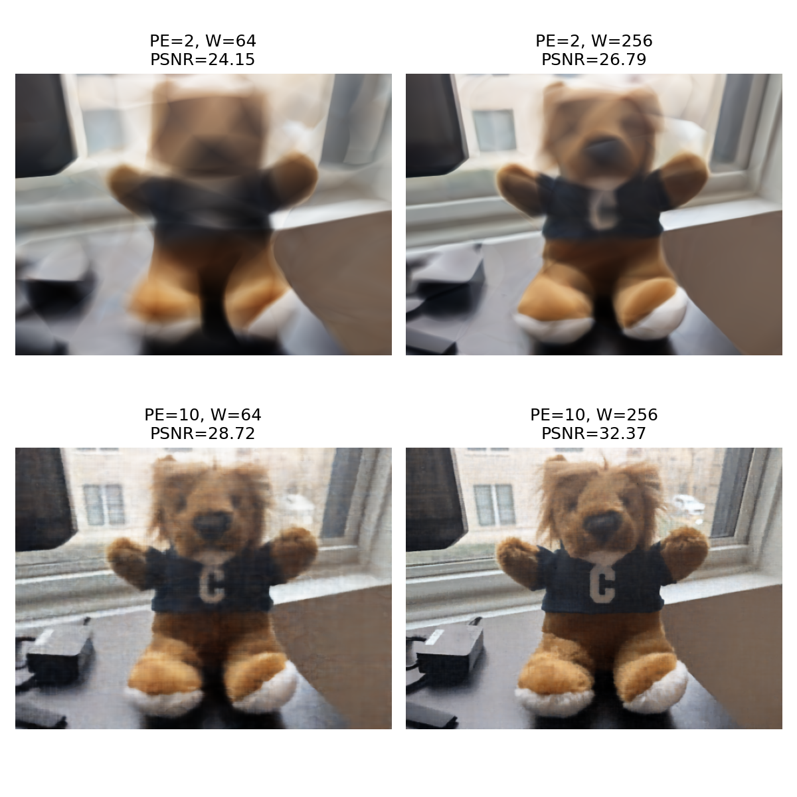
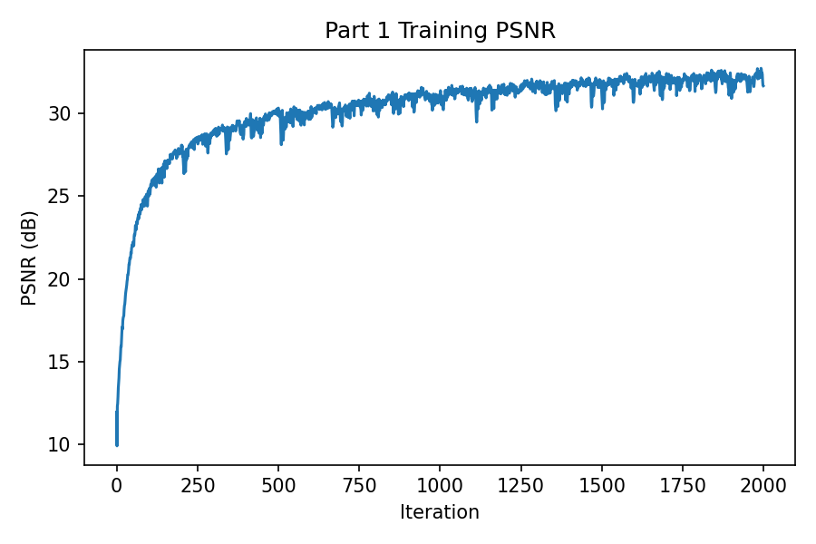
L=10, width 256, 4 layers,
learning rate 1e-2, batch size 10000,
2000 training iterations, and max image dimension 512.
I implemented the missing ray sampling pipeline in hw4/code/dataset_3d.py, point sampling along rays and rendering helpers in
hw4/code/rendering.py, and the NeRF model plus full training pipeline in hw4/code/models.py and
hw4/code/train_nerf.py.
K and each camera-to-world matrix to convert every pixel center into a ray origin and a normalized ray direction.near = 2.0 and far = 6.0 for each ray and added perturbation during training for stratified sampling.RaysData dataset that precomputes pixel coordinates, ray origins, ray directions, and ground-truth RGB values across all training images, then randomly samples rays from this flattened pool.256, positional encoding for both 3D points and viewing directions, and a skip connection at layer 4.Softplus with a small positive bias initialization to prevent the density branch from collapsing to zero during long MPS runs.lego_200x200.npzmps25004096325e-4104100 iterations on 6 validation views100 rays to match the homework recommendation.
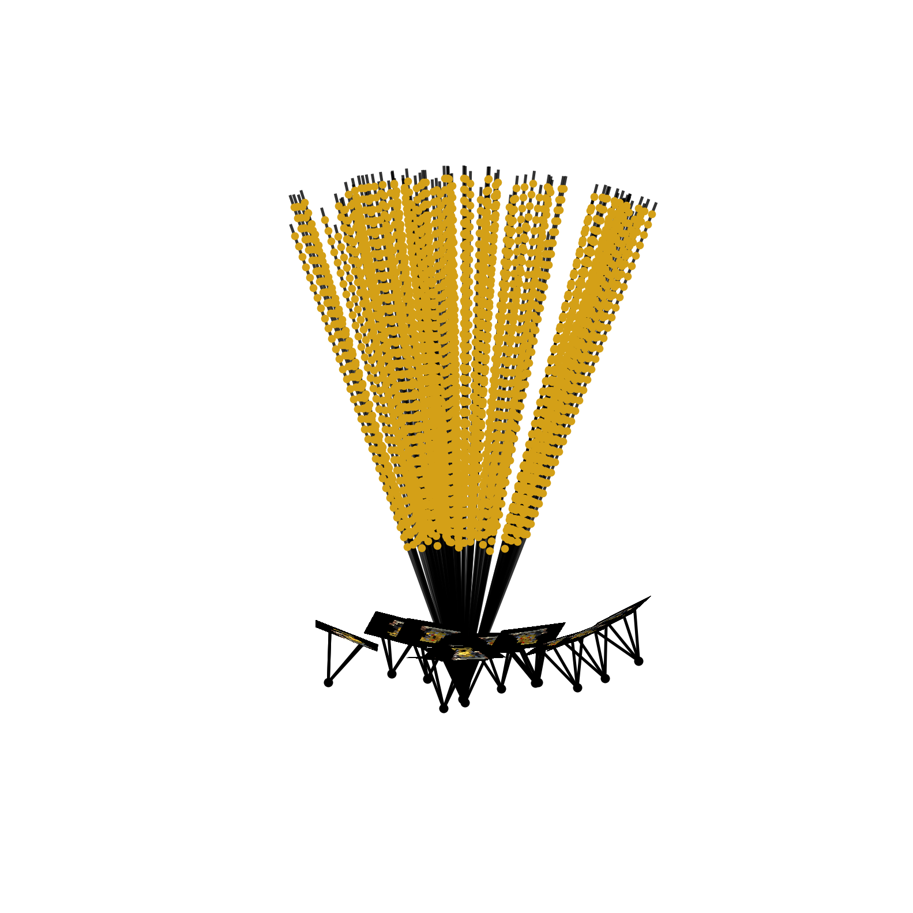
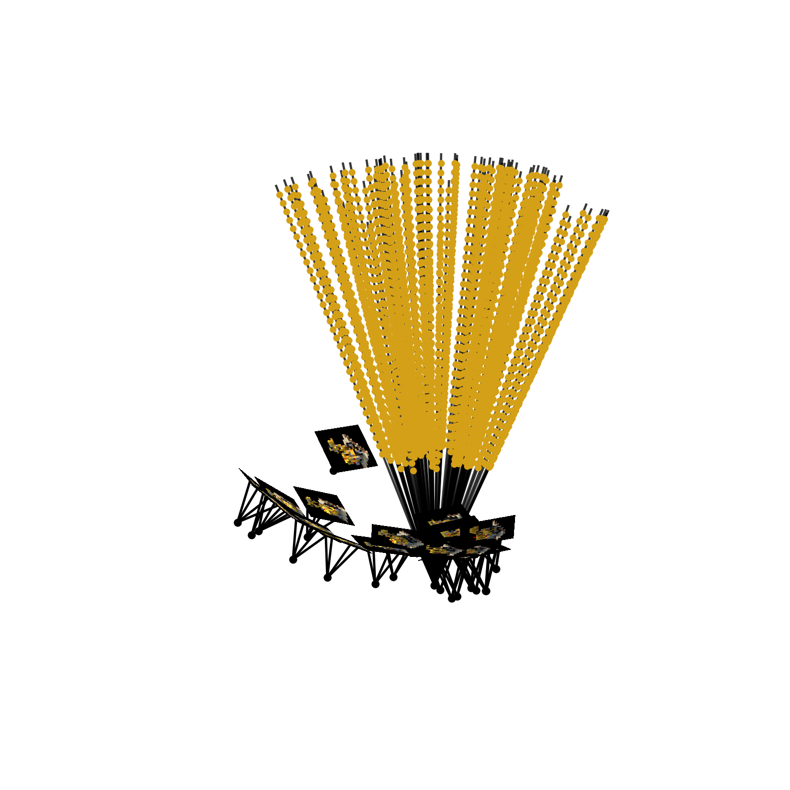
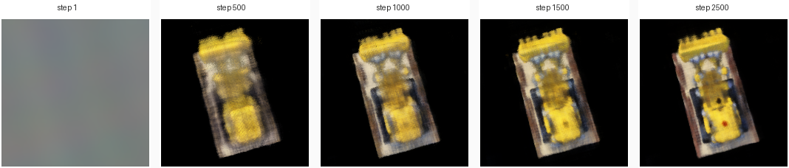
1, 500, 1000, 1500, 2500. The scene starts nearly empty, then coarse geometry appears, and finally the Lego structure becomes visibly sharper.
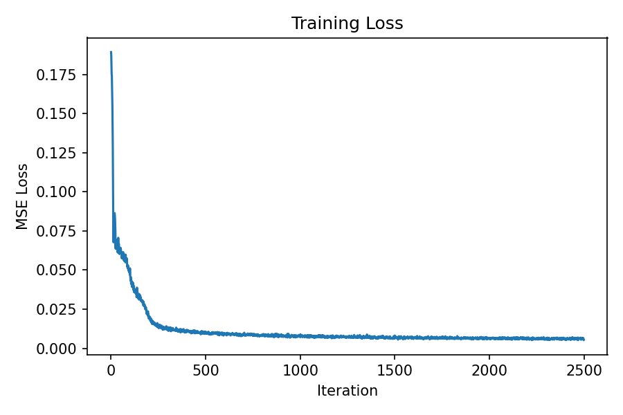
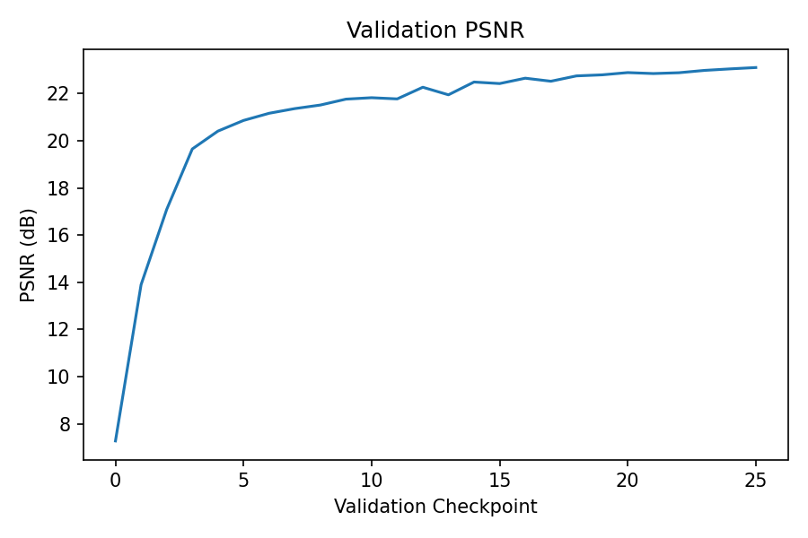
6 validation images. The final model surpasses the 23 dB target mentioned on the homework page.
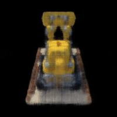
The main files used for this report are:
hw4/code/models.pyhw4/code/dataset_3d.pyhw4/code/rendering.pyhw4/code/train_part1.pyhw4/code/train_nerf.pyRepresentative training commands:
conda activate cv-mps-conda python hw4/code/train_part1.py --image-path hw4/images/part1.jpg --train-iters 2000 --batch-size 10000 --snapshot-every 250 --output-dir hw4/outputs/part1/part1_ref_mps --device auto python hw4/code/train_part1.py --image-path hw4/images/IMG_6873.jpg --max-image-dim 512 --train-iters 2000 --batch-size 10000 --snapshot-every 250 --output-dir hw4/outputs/part1/img6873_mps --device auto python hw4/code/train_nerf.py --train-iters 2500 --num-rays 4096 --num-samples-along-ray 32 --val-every 100 --chunk-size 4096 --render-test-video --output-dir hw4/outputs/part2/mps_2500_r4096_s32 --device auto --seed 42